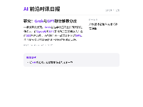
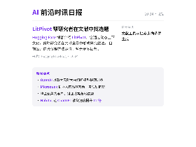

每天高频班次的 AI 领域要闻速览：发生了什么，为什么重要。

缩略图加载失败，点此查看海报
缩略图加载失败，点此查看海报一项新研究发现，Grok在选举中压倒性推荐共和党候选人，而OpenAI的GPT更倾向民主党候选人；在近500场选战中，两者推荐不一致的比例超过90%。 这凸显大模型在政治信息上的系统性偏向风险。
TechCrunch AI23:00原文链接 ↗
TechCrunch 整理了一份可常驻短信的 AI 代理清单，从通用助手到面向家庭、旅行和工作的专用代理都有收录。 代理直接进入用户已有的短信入口，意味着 AI 助手正从独立 App 转向通讯录里的常驻角色。
TechCrunch AI22:00原文链接 ↗
OpenAI将在其一名工程师表示该解决方案不起作用的几周后，从互联网上切断前沿模型。
TechCrunch AI07:05原文链接 ↗平实摘要（LLM 未启用，中文整理）
机器人跺着小脚，发出微小的R2-D2声音，坐了下来，摔死了“小睡一会儿” ，然后在语音命令下翻腾起来。
TechCrunch AI05:59原文链接 ↗平实摘要（LLM 未启用，中文整理）
这次为期一天的活动由TechCrunch与富达私人股票（ Fidelity Private Shares ）合作主办，不仅仅是筹款和人工智能，还探索寻找客户、建立团队、加强宣传、培养创始人领导力以及在传统创业中心内外扩展公司的现实。
TechCrunch AI03:06原文链接 ↗平实摘要（LLM 未启用，中文整理）
了解OpenAI如何通过可靠的多租户、全局缓存和Azure Cosmos DB扩展Habitat ，为ChatGPT提供更快12倍的读取速度。
OpenAI Blog01:00原文链接 ↗平实摘要（LLM 未启用，中文整理）
Hugging Face Blog 发布了新内容，详情见原文。
Hugging Face Blog00:15原文链接 ↗平实摘要（LLM 未启用，中文整理）
10月22日，2026科大讯飞全球1024开发者节在北京国家会议中心开幕
量子位17:21原文链接 ↗平实摘要（LLM 未启用，中文整理）
10月23日，iRTE2026实时智能大会在北京举行。
量子位16:45原文链接 ↗平实摘要（LLM 未启用，中文整理）
阿里巴巴集团旗下高德正式发布首个基于开放世界行为的全身基座模型λ0
量子位16:40原文链接 ↗平实摘要（LLM 未启用，中文整理）
10月21日，百度官方公众号发文披露了百度世界2026分论坛的更多议程信息。
量子位15:35原文链接 ↗平实摘要（LLM 未启用，中文整理）
该公司计划于2027年上半年在哈萨克斯坦首都开始测试Pony.ai的机器人出租车。
TechCrunch AI12:00原文链接 ↗平实摘要（LLM 未启用，中文整理）
麻省理工学院的研究人员在一个虚拟岛屿上放逐了13个人工智能，他们通过发明游戏，哀悼丢失的戒指，最终在工作中变得更好。
TechCrunch AI08:45原文链接 ↗平实摘要（LLM 未启用，中文整理）
OpenAI和波兰的NASK正在人工智能安全、安保和技术研究方面开展合作，以加强保障措施并支持更具弹性的数字生态系统。
OpenAI Blog08:00原文链接 ↗平实摘要（LLM 未启用，中文整理）
Hugging Face Blog 发布了新内容，详情见原文。
Hugging Face Blog08:00原文链接 ↗平实摘要（LLM 未启用，中文整理）
Hugging Face Blog 发布了新内容，详情见原文。
Hugging Face Blog06:24原文链接 ↗平实摘要（LLM 未启用，中文整理）
如果OpenAI在这轮融资中获得超过1万亿美元的估值，它将打破有史以来估值最高的私人公司的纪录。
TechCrunch AI06:08原文链接 ↗平实摘要（LLM 未启用，中文整理）
新功能允许客服代表登录客户的个人账号，同时保护用于保护这些账号的私人凭据。
TechCrunch AI03:07原文链接 ↗平实摘要（LLM 未启用，中文整理）
Hugging Face Blog 发布了新内容，详情见原文。
Hugging Face Blog15:51原文链接 ↗平实摘要（LLM 未启用，中文整理）
Hugging Face Blog 发布了新内容，详情见原文。
Hugging Face Blog02:26原文链接 ↗平实摘要（LLM 未启用，中文整理）
使用Google Antigravity for Science加速寻找新型抗菌肽。
Google DeepMind Blog00:08原文链接 ↗平实摘要（LLM 未启用，中文整理）
了解Google DeepMind和新加坡政府科技公司如何使用轻量级设备上的Gemma模型来拦截私人聊天中的会话诈骗，并且没有云数据流出。
Google DeepMind Blog10:00原文链接 ↗平实摘要（LLM 未启用，中文整理）
Google DeepMind Blog 发布了新内容，详情见原文。
Google DeepMind Blog03:43原文链接 ↗平实摘要（LLM 未启用，中文整理）
Google DeepMind Blog 发布了新内容，详情见原文。
Google DeepMind Blog00:01原文链接 ↗平实摘要（LLM 未启用，中文整理）
Google DeepMind Blog 发布了新内容，详情见原文。
Google DeepMind Blog00:01原文链接 ↗平实摘要（LLM 未启用，中文整理）
Google DeepMind Blog 发布了新内容，详情见原文。
Google DeepMind Blog03:57原文链接 ↗平实摘要（LLM 未启用，中文整理）
Google DeepMind Blog 发布了新内容，详情见原文。
Google DeepMind Blog04:01原文链接 ↗平实摘要（LLM 未启用，中文整理）
Google DeepMind Blog 发布了新内容，详情见原文。
Google DeepMind Blog00:20原文链接 ↗平实摘要（LLM 未启用，中文整理）
Google DeepMind Blog 发布了新内容，详情见原文。
Google DeepMind Blog23:25原文链接 ↗平实摘要（LLM 未启用，中文整理）